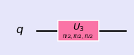
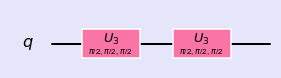

Single Qubit Circuits
%matplotlib inline import numpy as np import IPython import matplotlib.pyplot as plt from qiskit import QuantumCircuit from qiskit import BasicAer from qiskit.tools.jupyter import * from qiskit.visualization import * import seaborn as sns sns.set()
from helper import * import os import glob import moviepy.editor as mpy
Single qubit circuit:
Base states : |0>, |1>
qc = QuantumCircuit(1) qc.u3(np.pi/2,np.pi/2,np.pi/2,0) style = {'backgroundcolor': 'lavender'} qc.draw(output='mpl', style = style)

getMatrix(qc)
matrix([[ 0.707+0.j , -0. -0.707j],
[ 0. +0.707j, -0.707+0.j ]])
Gates in series
qc = QuantumCircuit(1) qc.u3(np.pi/2,np.pi/2,np.pi/2,0) qc.u3(np.pi/2,np.pi/2,np.pi/2,0) style = {'backgroundcolor': 'lavender'} qc.draw(output='mpl', style = style)

getMatrix(qc)
matrix([[1.+0.j, 0.+0.j],
[0.+0.j, 1.+0.j]])